Home
About Me
Biodata
Interest
Webtoon
Anime & Movies
Game
Education
Kindergarden
Primary School
Secondary & STPM 2021/2023
University
Your browser does not support the audio element.
MY SECONDARY SCHOOL & MY STPM
Suprisingly, i was in Maahad Saniah during my secondary school from 2016-2021 (during COVID-19)
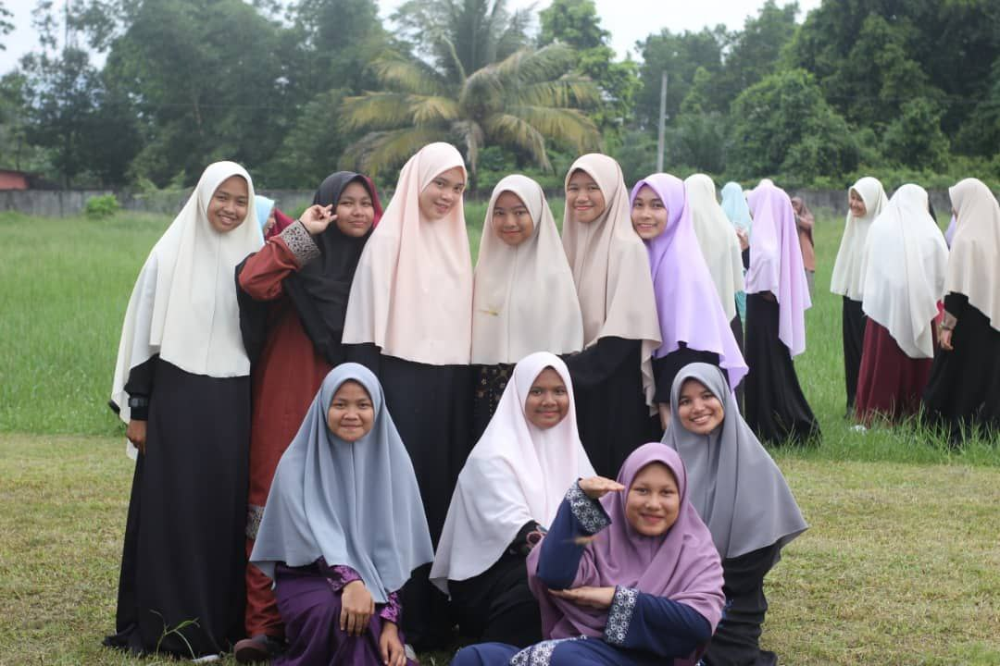
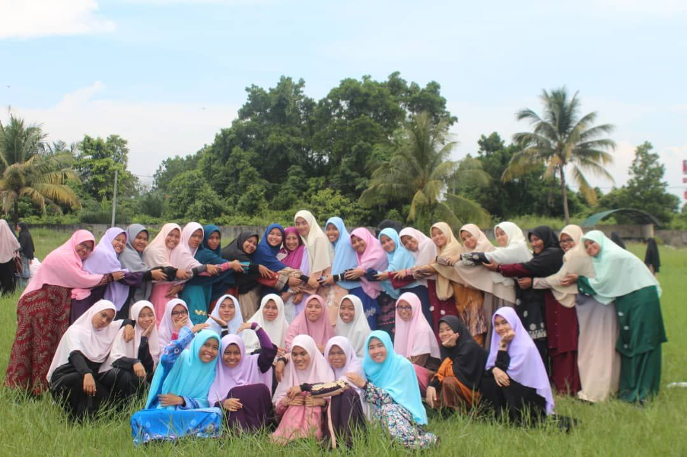
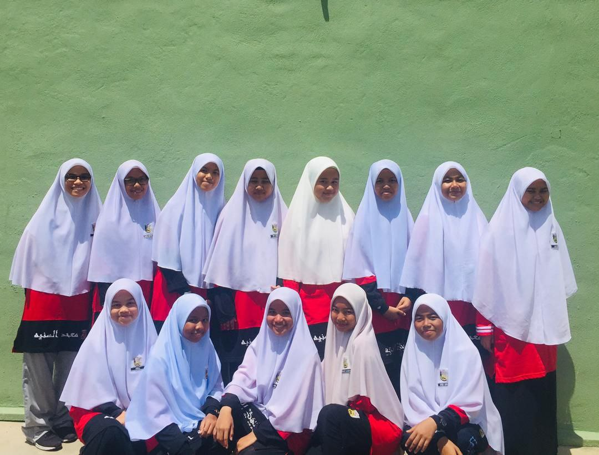
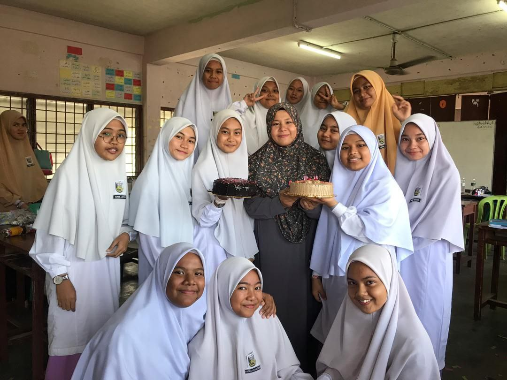
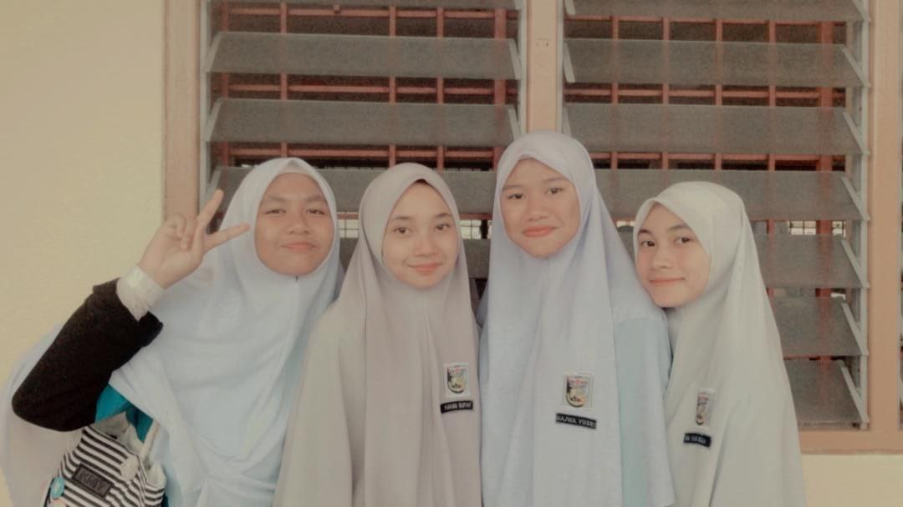
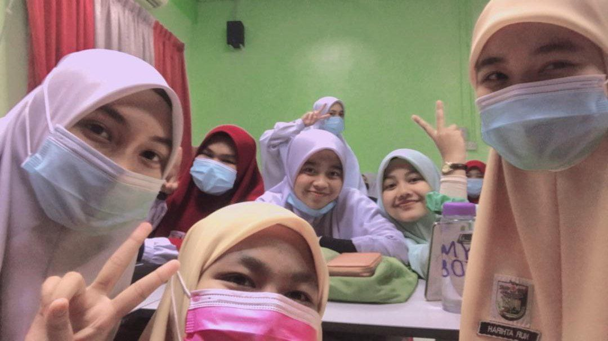
Meanwhile, after SPM, I continue my journey and took part in STPM at SMK Tok Janggut, Pasir Puteh Kelantan..
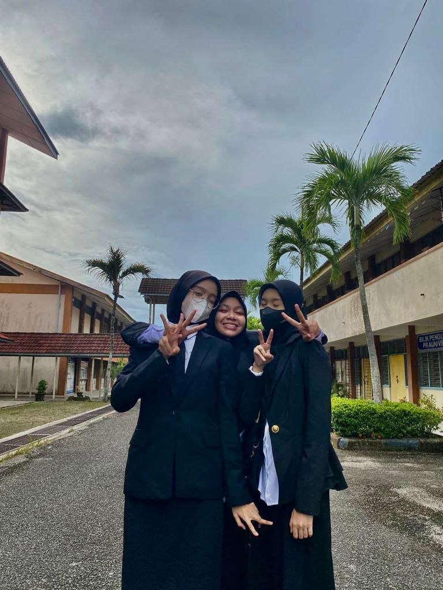
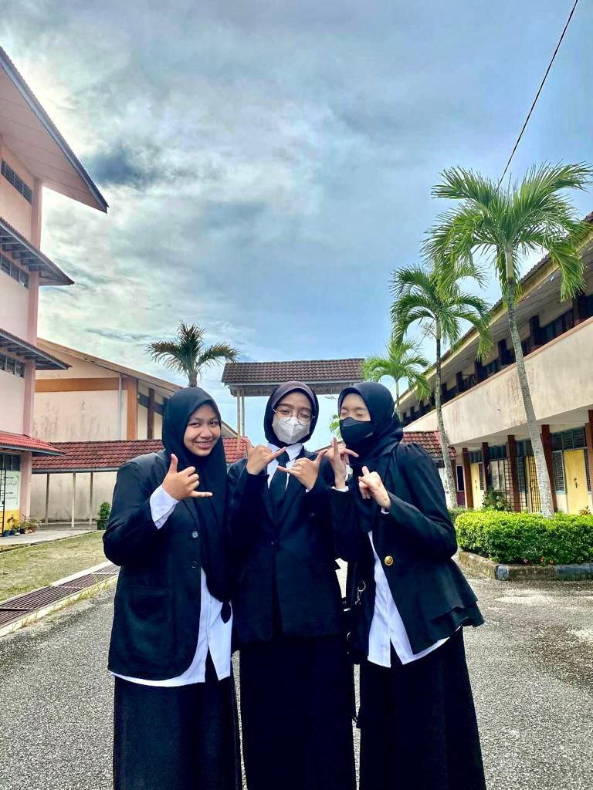
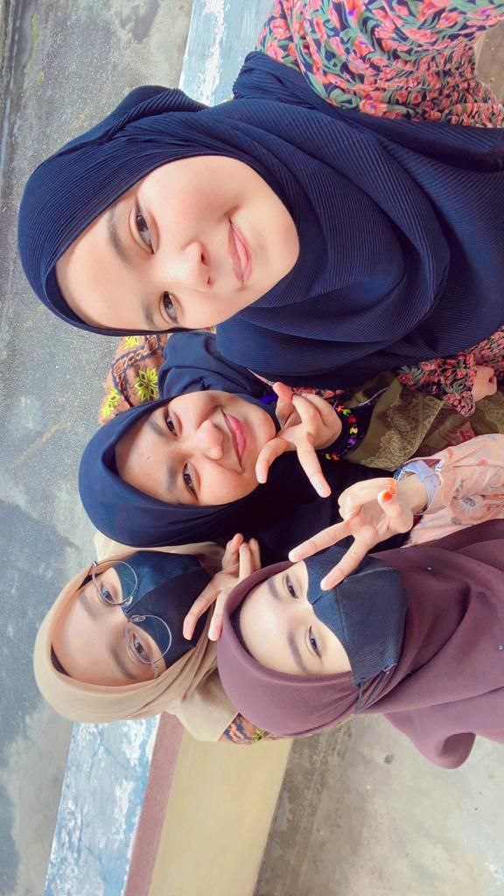
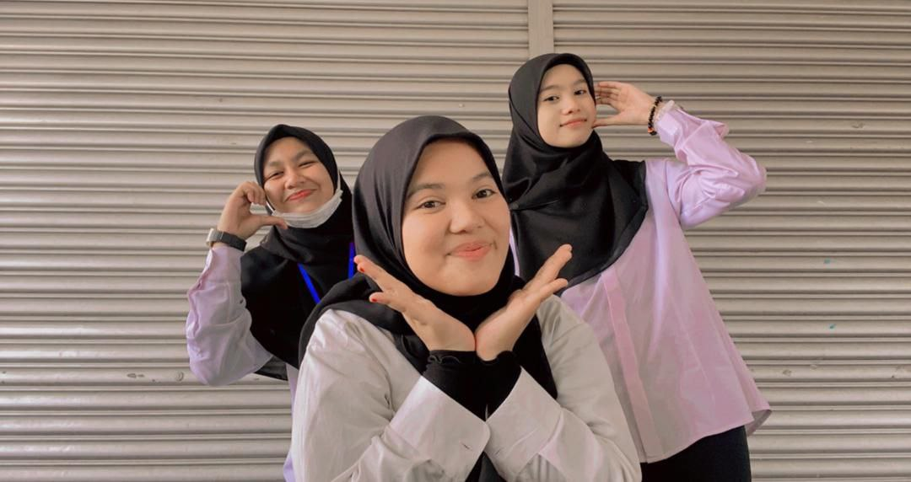
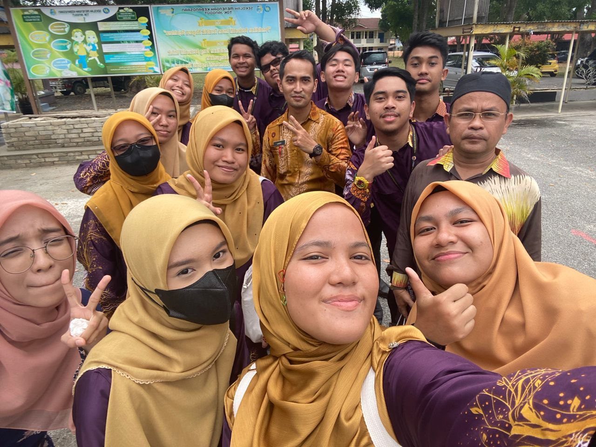